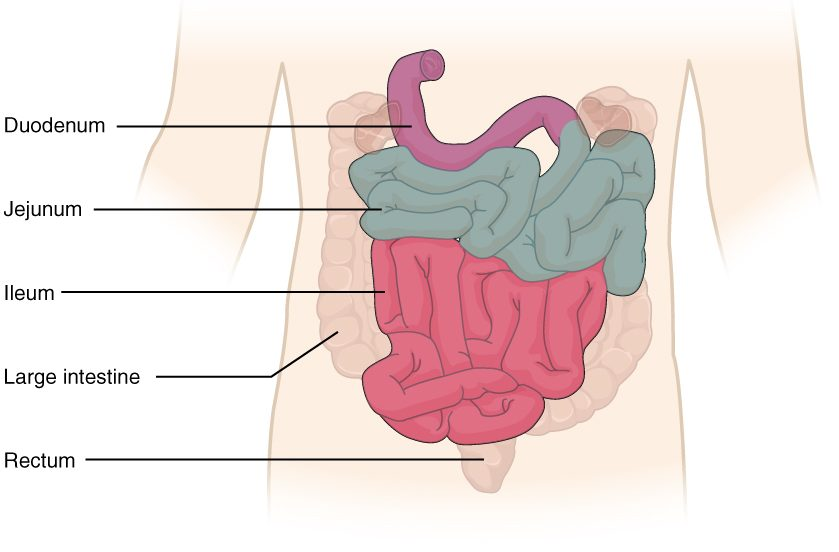

Nearly all the nutrients you absorb cross the lining of one organ, the small intestine. It is a tube only about 2.5 cm wide, yet its lining is folded, and folded again, and again, until it offers an enormous surface to the digested meal. This page covers small intestine structure from the organ down to the cell: its three regions, the circular folds, villi and microvilli that build its absorptive surface, the glands between the villi, the brush border enzymes that finish digestion, and the movements that mix and move its contents.
Three regions
The small intestine runs from the pyloric sphincter to the start of the large intestine in the lower right abdomen. In a living person it is about 3 to 5 meters long; after death, when its muscle loses tone, it measures about 6 meters. Its three regions of the small intestine blend into one another (Figure 1):
- The duodenum (Latin duodeni = twelve each, for its length of about twelve finger-widths) is the first 25 cm. It curves in a C around the head of the pancreas and, apart from its first few centimeters, is retroperitoneal. It receives chyme through the pylorus, and about halfway along its curve a duct carrying bile from the liver and gallbladder and digestive juice from the pancreas opens into it. So the duodenum is where the stomach's acid is neutralized and most chemical digestion begins.
- The jejunum (jejun- = empty; anatomists found it empty after death) is the next two fifths of the remaining length, coiled mostly in the upper left abdomen. It absorbs most nutrients.
- The ileum (Greek eilein = to roll up) is the final three fifths, coiled in the lower right abdomen and pelvis. It absorbs vitamin B12 bound to intrinsic factor, and it recovers most of the bile secreted during a meal for reuse. It ends at the ileocecal valve (also called the ileocecal sphincter), where it joins the large intestine.
The jejunum and ileum hang from the mesentery, a fan of peritoneum whose root is only about 15 cm long at the back wall, though its free edge follows the whole length of intestine. The superior mesenteric artery and vein run between its layers.

Jejunum and ileum compared
There is no sharp border between the jejunum and the ileum, but the two ends of the stretch look different, and surgeons use these differences to tell where they are.
| Jejunum | Ileum | |
|---|---|---|
| Share of the length after the duodenum | About two fifths | About three fifths |
| Position | Upper left abdomen | Lower right abdomen and pelvis |
| Wall | Thicker, wider, redder (richer blood supply) | Thinner, narrower, paler |
| Circular folds | Tall and close together | Low and sparse, absent near the end |
| Villi | Tall and leaf-like | Shorter and fewer |
| Peyer's patches | Few | Many |
| Main absorptive job | Most sugars, amino acids and fats | Vitamin B12 with intrinsic factor; bile recovered for reuse; whatever the jejunum missed |
Duodenal glands
Chyme arrives in the duodenum at a pH near 2. The submucosa of the first part of the duodenum holds duodenal glands (also called Brunner glands), which secrete a thick, alkaline mucus. It coats the lining and helps neutralize the acid until the bicarbonate from the pancreas mixes in. Most ulcers of the small intestine form in this first part, where acid hits hardest.
The ileocecal valve
At the end of the ileum, a thickening of the circular muscle and two lips of mucosa that project into the large intestine form the ileocecal valve. The muscle keeps the passage mostly closed. When the large intestine is stretched, the valve closes harder, which limits backflow of the large intestine's bacteria-rich contents. After a meal it opens more often, as you will see under motility.
Building a huge surface
You met the rule in the topic on diffusion: the rate at which a substance crosses a barrier rises with the area of the barrier. The small intestine applies it three times over, at three scales (Figure 2).
Circular folds
Circular folds (also called plicae circulares; plica = fold) are permanent ridges of the mucosa and submucosa that run partway around the inside of the tube, up to about 1 cm tall. Unlike the rugae of the stomach, they do not flatten when the intestine fills. They also make chyme spiral as it moves, which slows it and keeps it in contact with the lining. They are tallest and closest in the jejunum and fade out toward the end of the ileum.
Villi
The mucosa of the whole small intestine, folds included, is covered with villi (singular villus; villus = shaggy hair): finger-like projections 0.5 to 1 mm tall, which give the lining a velvety look. Each villus has:
- a covering of simple columnar epithelium, mostly absorptive cells joined by tight junctions, with goblet cells and a few enteroendocrine cells;
- a core of lamina propria holding a network of blood capillaries, which pick up absorbed sugars, amino acids and water and send them through the hepatic portal vein to the liver;
- a single central lymphatic capillary, the lacteal (lact- = milk). Absorbed fat is packaged inside the absorptive cells into droplets too large to enter blood capillaries, and these enter the lacteal instead. After a fatty meal, the lymph in the lacteals looks milky, which gave them their name;
- a few strands of smooth muscle from the muscularis mucosae, which shorten the villus now and then and squeeze the lacteal's contents along.
Microvilli
Each absorptive cell carries on its free surface a few thousand microvilli, the membrane projections supported by actin filaments that you met with the organelles. Each is about 1 µm tall. Together they form the brush border, visible under a light microscope as a fuzzy line along the top of the cells. A coat of glycoproteins on the microvilli holds the brush border enzymes described below.
Worked example: how much each level adds. Textbooks often estimate that circular folds multiply the surface about 3 times, villi about 10 times and microvilli about 20 times.
- Start with a smooth tube's inner surface. Call its area 1.
- Circular folds: 1 × 3 = 3.
- Villi on those folds: 3 × 10 = 30.
- Microvilli on every absorptive cell of the villi: 30 × 20 = 600.
So the three levels together multiply the surface about 600 times. Now suppose a disease flattens the villi but leaves the folds and microvilli: 1 × 3 × 1 × 20 = 60, one tenth of normal. Absorption falls in proportion, which is why flattened villi cause weight loss and deficiencies even when enough food is eaten.
How big is the total? Older textbooks multiplied estimates like these and arrived at 200 to 300 square meters, "the size of a tennis court". Measurements that include the microvilli but use the living intestine's true dimensions give a far smaller figure: about 30 square meters for the whole small intestine, roughly half a badminton court. That is still about 15 to 20 times the area of your skin. The same measurements found smaller multipliers than the textbook ones: about 1.6 for the folds and 60 to 120 for villi and microvilli together. So the real total is roughly 100- to 200-fold, not 600-fold.
Intestinal glands and intestinal juice
Between the bases of the villi, the epithelium dips down into tube-shaped pits, the intestinal glands (also called intestinal crypts, or crypts of Lieberkühn). They do three jobs:
- They renew the lining. Stem cells near the base of each gland divide constantly. Their daughters migrate up out of the gland and along the villus, maturing into absorptive, goblet and enteroendocrine cells, and are shed from the villus tip into the lumen 3 to 5 days later. This is one of the fastest-dividing tissues in your body, which is why cancer chemotherapy, which kills dividing cells, so often damages the gut.
- They defend it. Paneth cells at the base of each gland secrete lysozyme and defensins, which you met with innate immunity.
- They secrete intestinal juice. Cells in the glands pump chloride into the lumen; sodium and water follow. The result is intestinal juice, 1 to 2 liters a day of a watery, slightly alkaline fluid with mucus from the goblet cells. It contains very little enzyme. Its job is to keep the chyme fluid, so that nutrients stay dissolved and reach the absorptive surface. Most of the water is taken back up by the villi.
Brush border enzymes
Where does digestion in the small intestine actually finish? Not in the lumen. Enzymes from the pancreas split starch and proteins in the lumen into short pieces: maltose and other short sugar chains, and short peptides. The last cut, into single sugars and amino acids, happens on the surface of the microvilli, by brush border enzymes. They are proteins built into the membrane of the microvilli, with their active sites facing the lumen. Because they sit right beside the transporters that carry the products into the cell, a monomer is released at the very membrane that absorbs it.
| Enzyme | Substrate | Products |
|---|---|---|
| Lactase | Lactose, the sugar in milk | Glucose and galactose |
| Sucrase | Sucrose, table sugar | Glucose and fructose |
| Maltase | Maltose, from starch digestion | Two glucose |
| Peptidases | Short peptides | Amino acids, and some dipeptides and tripeptides |
The enzymes are named for their substrates: lactase (lact- = milk), sucrase (sucr- = sugar), maltase (malt, the sprouted grain rich in maltose) and peptidases (pept- = digested, protein fragment). The ending -ase marks an enzyme.
Because these enzymes are part of the absorptive cells, anything that damages the villi also removes them. When the villi are flattened, lactase is usually the first activity to fall, because it is the least abundant.
Lactase also changes with age. Every baby makes plenty of it. In about two thirds of adults worldwide, lactase production falls after early childhood. People whose ancestors herded dairy animals (many northern Europeans and some East African, West African and Middle Eastern groups) more often keep making it through life. What happens to lactose that is not digested is covered in the digestion and absorption topic.
How the small intestine moves
After a meal: segmentation
While chyme is arriving, the main movement is segmentation, which you met in the overview of the digestive system (Figure 3). Rings of circular muscle chop and remix the chyme, mix it with pancreatic secretions and bile, and press it against the villi again and again. The rings contract more often at the start of the small intestine (about 12 times a minute in the duodenum) than at the end (about 8 in the ileum), following the rhythm of the pacesetter cells. That gradient, plus short peristaltic waves that travel only a few centimeters, moves chyme slowly toward the ileum. Chyme takes about 3 to 5 hours to pass through the small intestine, time enough for digestion and absorption.

Between meals: the migrating motor complex
Once most of a meal has been absorbed, the pattern changes. Every 90 to 120 minutes, released by the hormone motilin, a band of strong peristaltic contractions starts in the stomach and travels slowly down the whole small intestine to the end of the ileum. This is the migrating motor complex (also called the migrating motility complex). It sweeps undigested particles, shed cells, mucus and bacteria into the large intestine, and it keeps bacteria from building up in the small intestine. It is also behind much of the rumbling you hear from an empty stomach. Eating a meal stops it at once, and segmentation takes over again.
The gastroileal reflex
When a new meal enters your stomach, the ileum responds: its motility increases and the ileocecal sphincter relaxes, so contents left from the previous meal move into the large intestine. This is the gastroileal reflex (gastr- = stomach), carried by long reflexes through the autonomic nerves and helped by gastrin. It makes room in the small intestine for the chyme that is about to arrive.
| Segmentation | Migrating motor complex | |
|---|---|---|
| When | During and after a meal | Between meals, while fasting |
| Pattern | Rings that contract in place and alternate | A band of strong peristalsis traveling from stomach to ileum |
| Net movement | Slow | Sweeps contents all the way to the large intestine |
| Job | Mixing and contact with the lining | Clearing residue and bacteria |
| Main trigger | Chyme stretching the wall; the ENS | Motilin |
| Stopped by | The end of digestion | Eating |
Summary
The small intestine has three regions: the duodenum, which receives chyme, bile and pancreatic secretions and has alkaline duodenal glands; the jejunum, which absorbs most nutrients; and the ileum, which absorbs vitamin B12 and recovers bile, has many Peyer's patches, and ends at the ileocecal valve. Its absorptive surface is multiplied by circular folds, villi and microvilli, more than a hundredfold in all, to about 30 square meters measured directly (textbooks estimate about 600-fold). Each villus holds blood capillaries and a lacteal for fat. Intestinal glands between the villi renew the lining every few days, defend it and secrete watery intestinal juice. Brush border enzymes in the microvillus membrane (lactase, sucrase, maltase and peptidases) finish digestion right at the absorbing surface. After a meal, segmentation mixes the chyme and moves it slowly; between meals, the migrating motor complex clears the tube; and the gastroileal reflex opens the ileocecal sphincter when you eat.